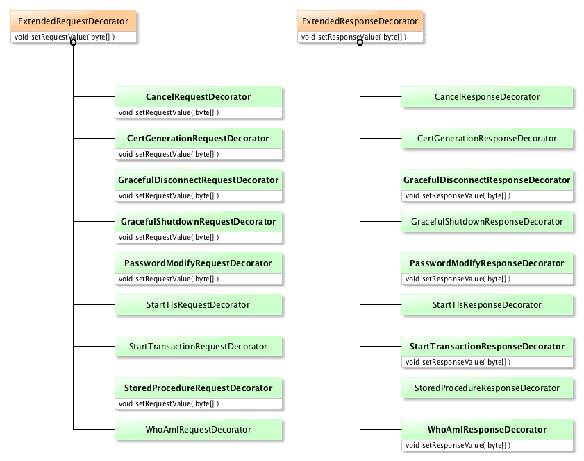

LDAP API
Downloads
Getting Started
Documentation
- Five minute tutorial
- User Guide
- API 1 to 2 migration
- JavaDocs 2
- JavaDocs
- Cross-Reference 2
- Cross-Reference
- Developer Guide
- Internal Guide
Support
Community
About Apache
14 - Extended Operations
Extended Operation is a LDAP message which may content a payload. It is generally sent by the clinet, but the server can send a ExtendedResponse as a response to any operation : the Notice of Disconnection.
Here is the syntax for the extended Operation :
ExtendedRequest ::= [APPLICATION 23] SEQUENCE {
requestName [0] LDAPOID,
requestValue [1] OCTET STRING OPTIONAL }
ExtendedResponse ::= [APPLICATION 24] SEQUENCE {
COMPONENTS OF LDAPResult,
responseName [10] LDAPOID OPTIONAL,
responseValue [11] OCTET STRING OPTIONAL }
(the payload is the requestValue or responseValue part, which may be BER encoded).
This message is routinely decoded as is by the standard LDAP message decoder, but the payload has to be decoded on its own.
Supported extended operations
Currently, the LDAP API support the following extended operations :
- Cancel request and response (RFC 3909)
- CertGenerationRequest request and response, an ApacheDS specific operation in charge of generating a certificate
- GracefulDisconnect response, an ApacheDS specific operation used when the server is shutdown properly
- GracefulShutdown request and response, an ApacheDS specific operation used to shutdown the remote server properly
- PasswordModify request and response (RFC 3062)
- StartTls request and response (RFC 4511)
- StoredProcedure request and response, an ApacheDS specific operation used to execute a stored procedure on the server
- WhoAmI request and response (RFC 4532)
Encoding and decoding
When the requestValue part is present, it has to be encoded (when the client sends the request to the srrver) or decoded ( when the client receives the response from the server).
Decoding a request/response
The payload is decoded on the fly when the request/response is processed during the extendedRequest/extendedResponse is being decoded. The StoreExtendedRequestValue/StoreExtendedResponseValue will store the byte[] - if any - and depending on the operation, the specific request/response will decode the value. Here is the action method for the StoreExtendedRequestValue class :
public void action( LdapMessageContainer<ExtendedRequestDecorator<?>> container ) throws DecoderException
{
// We can allocate the ExtendedRequest Object
ExtendedRequestDecorator<?> extendedRequest = container.getMessage();
// Get the Value and store it in the ExtendedRequest
TLV tlv = container.getCurrentTLV();
// We have to handle the special case of a 0 length matched
// value
if ( tlv.getLength() == 0 )
{
extendedRequest.setRequestValue( Strings.EMPTY_BYTES );
}
else
{
extendedRequest.setRequestValue( tlv.getValue().getData() );
}
Each implementaion may have a setRequestValue/setResponseValue methd, overloading the parentclass. In this case, the value is decoded by the method.
Here is an example of setRequestValue implementation (for the PasswordModifyRequest class) :
public void setRequestValue( byte[] requestValue )
{
PasswordModifyRequestDecoder decoder = new PasswordModifyRequestDecoder();
try
{
if ( requestValue != null )
{
passwordModifyRequest = decoder.decode( requestValue );
this.requestValue = new byte[requestValue.length];
System.arraycopy( requestValue, 0, this.requestValue, 0, requestValue.length );
}
else
{
this.requestValue = null;
}
}
catch ( DecoderException e )
{
LOG.error( I18n.err( I18n.ERR_04165 ), e );
throw new RuntimeException( e );
}
}
As we can see, the decoder is invoked if the requestValue bytes is not null. It instanciate a PasswordModifyRequest.
If there is no payload, the parent’s method is invoked (which basically does nothing).
Here is a schema showing which request/response operations as a payload that needs to be decoded :

Encoding a request/response
Encoding is done through a Decorator. Each extended operation has a dedicated Decorator, which may have a specific encoding function. Again, as we only encode the payload, if this payload is absent, there is nothing to encode. Not all the extended operations have a payload.
If there is a payload to encode, this is done by calling the getRequestValue()/getResponseValue() method in the decorator. Here is an example :
public byte[] getRequestValue()
{
if ( requestValue == null )
{
try
{
requestValue = encodeInternal().array();
}
catch ( EncoderException e )
{
LOG.error( I18n.err( I18n.ERR_04167 ), e );
throw new RuntimeException( e );
}
}
return requestValue;
}
The encodeInternal method is in charge of encoding teh paylod.
If the getRequestValue/getResponseValue_ method is absent, that leans there is nothing to encode. The inherited method will be executed, which returns null.
Internally, we compute the length of the needed PDU accordingly to the data we have to encode, allocate a ByteBuffer to hold the encoded data, and store teh encoded data into it :
/**
* Encodes the PasswordModifyRequest extended operation.
*
* @return A ByteBuffer that contains the encoded PDU
* @throws org.apache.directory.api.asn1.EncoderException If anything goes wrong.
*/
/* No qualifier */ByteBuffer encodeInternal() throws EncoderException
{
ByteBuffer bb = ByteBuffer.allocate( computeLengthInternal() );
bb.put( UniversalTag.SEQUENCE.getValue() );
bb.put( TLV.getBytes( requestLength ) );
if ( passwordModifyRequest.getUserIdentity() != null )
{
byte[] userIdentity = passwordModifyRequest.getUserIdentity();
bb.put( ( byte ) PasswordModifyRequestConstants.USER_IDENTITY_TAG );
bb.put( TLV.getBytes( userIdentity.length ) );
bb.put( userIdentity );
}
if ( passwordModifyRequest.getOldPassword() != null )
{
byte[] oldPassword = passwordModifyRequest.getOldPassword();
bb.put( ( byte ) PasswordModifyRequestConstants.OLD_PASSWORD_TAG );
bb.put( TLV.getBytes( oldPassword.length ) );
bb.put( oldPassword );
}
if ( passwordModifyRequest.getNewPassword() != null )
{
byte[] newPassword = passwordModifyRequest.getNewPassword();
bb.put( ( byte ) PasswordModifyRequestConstants.NEW_PASSWORD_TAG );
bb.put( TLV.getBytes( newPassword.length ) );
bb.put( newPassword );
}
return bb;
}
and the computeLength method is :
/**
* Compute the PasswordModifyRequest extended operation length
* <pre>
* 0x30 L1
* |
* [+-- 0x80 L2 userIdentity]
* [+-- 0x81 L3 oldPassword]
* [+-- 0x82 L4 newPassword]
* </pre>
*/
/* No qualifier */int computeLengthInternal()
{
requestLength = 0;
if ( passwordModifyRequest.getUserIdentity() != null )
{
int len = passwordModifyRequest.getUserIdentity().length;
requestLength = 1 + TLV.getNbBytes( len ) + len;
}
if ( passwordModifyRequest.getOldPassword() != null )
{
int len = passwordModifyRequest.getOldPassword().length;
requestLength += 1 + TLV.getNbBytes( len ) + len;
}
if ( passwordModifyRequest.getNewPassword() != null )
{
int len = passwordModifyRequest.getNewPassword().length;
requestLength += 1 + TLV.getNbBytes( len ) + len;
}
return 1 + TLV.getNbBytes( requestLength ) + requestLength;
}
Adding a new Extended operation
We will show how to add a new extended operation in the LDAP API. The added operation is the startTransaction operation, described in RFC 5805.
The startTransactionRequest has a requestName containing 1.3.6.1.1.21.1, and no requestValue. The startTransactionResponse has no responseName and a responseValue containing an opaque transaction identifier (ie, it does not need to be decoced).
We first need to declare an interface and implementation for each of those two operations. Those four elements are declared in the
package org.apache.directory.api.ldap.extras.extended.startTransaction;
import org.apache.directory.api.ldap.model.message.ExtendedRequest;
/**
* The TransactionRequest interface. This is for the RFC 5805 Start Transaction Request,
* which grammar is :
* <pre>
* ExtendedRequest ::= [APPLICATION 23] SEQUENCE {
* requestName [0] LDAPOID,
* requestValue [1] OCTET STRING OPTIONAL }
* </pre>
*
* where 'requestName' is 1.3.6.1.1.21.1 and requestValue is absent.
*
* @author <a href="mailto:dev@directory.apache.org">Apache Directory Project</a>
*/
public interface StartTransactionRequest extends ExtendedRequest
{
/** The OID for the Transaction extended operation request. */
String EXTENSION_OID = "1.3.6.1.1.21.1";
}
The request interface defines noting but the OID, as we don’t have any payload.
Here is the implementation :
package org.apache.directory.api.ldap.extras.extended.startTransaction;
import org.apache.directory.api.ldap.model.message.AbstractExtendedRequest;
/**
* Implement the extended Start Transaction Request as described in RFC 5805.
*
* It's grammar is :
*
* <pre>
* ExtendedRequest ::= [APPLICATION 23] SEQUENCE {
* requestName [0] LDAPOID,
* requestValue [1] OCTET STRING OPTIONAL }
* </pre>
*
* where 'requestName' is 1.3.6.1.1.21.1 and requestValue is absent.
*
* @author <a href="mailto:dev@directory.apache.org">Apache Directory Project</a>
*/
public class StartTransactionRequestImpl extends AbstractExtendedRequest implements StartTransactionRequest
{
/**
* Creates a new instance of StartTransactionRequestImpl.
*
* @param messageId the message id
*/
public StartTransactionRequestImpl( int messageId )
{
super( messageId );
setRequestName( EXTENSION_OID );
}
/**
* Creates a new instance of StartTransactionRequestImpl.
*/
public StartTransactionRequestImpl()
{
setRequestName( EXTENSION_OID );
}
/**
* {@inheritDoc}
*/
@Override
public StartTransactionResponse getResultResponse()
{
if ( getResponse() == null )
{
setResponse( new StartTransactionResponseImpl() );
}
return ( StartTransactionResponse ) getResponse();
}
}
We just implement the method that returns the associated response.
Now for the response, which has an opaque value, here is the interface :
package org.apache.directory.api.ldap.extras.extended.startTransaction;
import org.apache.directory.api.ldap.model.message.ExtendedResponse;
/**
* The interface for Start Transaction Extended Response. It's described in RFC 5805 :
*
* <pre>
* ExtendedResponse ::= [APPLICATION 24] SEQUENCE {
* COMPONENTS OF LDAPResult,
* responseName [10] LDAPOID OPTIONAL,
* responseValue [11] OCTET STRING OPTIONAL }
* </pre>
*
* where the responseName is not present, and the responseValue contain
* a transaction identifier when the result is SUCCESS.
*
* @author <a href="mailto:dev@directory.apache.org">Apache Directory Project</a>
*/
public interface StartTransactionResponse extends ExtendedResponse
{
/** The OID for the Start Transaction extended operation response. */
String EXTENSION_OID = StartTransactionRequest.EXTENSION_OID;
/**
* @return The transaction ID if success
*/
byte[] getTransactionId();
}
As the response value is opaque, we return it as a byte[].
Here is the implementation :
package org.apache.directory.api.ldap.extras.extended.startTransaction;
import org.apache.directory.api.i18n.I18n;
import org.apache.directory.api.ldap.model.message.ExtendedResponseImpl;
import org.apache.directory.api.ldap.model.message.ResultCodeEnum;
import org.apache.directory.api.util.Strings;
/**
* The interface for Start Transaction Extended Response. It's described in RFC 5805 :
*
* <pre>
* ExtendedResponse ::= [APPLICATION 24] SEQUENCE {
* COMPONENTS OF LDAPResult,
* responseName [10] LDAPOID OPTIONAL,
* responseValue [11] OCTET STRING OPTIONAL }
* </pre>
*
* where the responseName is not present, and the responseValue contain
* a transaction identifier when the result is SUCCESS.
*
*
* @author <a href="mailto:dev@directory.apache.org">Apache Directory Project</a>
*/
public class StartTransactionResponseImpl extends ExtendedResponseImpl implements StartTransactionResponse
{
/** The transaction ID if the request was successful */
private byte[] transactionId;
/**
* Create a new StartTransactionResponseImpl object
*
* @param messageId The messageId
* @param rcode the result code
* @param transactionId The transaction ID
*/
public StartTransactionResponseImpl( int messageId, ResultCodeEnum resultCode, byte[] transactionId )
{
super( messageId );
switch ( resultCode )
{
case SUCCESS:
this.transactionId = Strings.copy( transactionId );
// pass through ...
case CANCELED:
case CANNOT_CANCEL:
case NO_SUCH_OPERATION:
case TOO_LATE:
break;
default:
throw new IllegalArgumentException( I18n.err( I18n.ERR_04166, ResultCodeEnum.SUCCESS,
ResultCodeEnum.OPERATIONS_ERROR, ResultCodeEnum.INSUFFICIENT_ACCESS_RIGHTS ) );
}
super.getLdapResult().setMatchedDn( null );
super.getLdapResult().setResultCode( resultCode );
}
/**
* Create a new StartTransactionResponseImpl instance
*
* @param messageId The request's messageId
* @param transactionId The transaction ID
*/
public StartTransactionResponseImpl( int messageId, byte[] transactionId )
{
super( messageId );
super.getLdapResult().setMatchedDn( null );
super.getLdapResult().setResultCode( ResultCodeEnum.SUCCESS );
this.transactionId = Strings.copy( transactionId );
}
/**
* Create a new StartTransactionResponseImpl instance
*
* @param transactionId The transaction ID
*/
public StartTransactionResponseImpl( byte[] transactionId )
{
super( StartTransactionRequest.EXTENSION_OID );
super.getLdapResult().setMatchedDn( null );
super.getLdapResult().setResultCode( ResultCodeEnum.SUCCESS );
this.transactionId = Strings.copy( transactionId );
}
/**
* Create a new StartTransactionResponseImpl instance
*/
public StartTransactionResponseImpl()
{
super( StartTransactionRequest.EXTENSION_OID );
super.getLdapResult().setMatchedDn( null );
super.getLdapResult().setResultCode( ResultCodeEnum.UNWILLING_TO_PERFORM );
}
/**
* Gets the OID uniquely identifying this extended response (a.k.a. its
* name). It's a null value for the Cancel response
*
* @return the OID of the extended response type.
*/
@Override
public String getResponseName()
{
return "";
}
/**
* {@inheritDoc}
*/
@Override
public int hashCode()
{
int hash = 37;
if ( transactionId != null )
{
for ( byte b : transactionId )
{
hash += hash * 17 + b;
}
}
hash = hash * 17 + getClass().getName().hashCode();
return hash;
}
/**
* @see Object#equals(Object)
*/
@Override
public boolean equals( Object obj )
{
if ( obj == this )
{
return true;
}
if ( !( obj instanceof StartTransactionResponseImpl ) )
{
return false;
}
return Arrays.equals( transactionId, ( ( StartTransactionResponseImpl ) obj ).transactionId );
}
/**
* {@inheritDoc}
*/
@Override
public byte[] getTransactionId()
{
return Strings.copy( transactionId );
}
/**
* {@inheritDoc}
*/
public void setTransactionId( byte[] transactionId )
{
this.transactionId = Strings.copy( transactionId );
}
}
There is nothing special in this implementation, we just make it so the transactionId bytes are copied to be sure they can’t be altered from the outside. Basically, the payload is transfered pristine into the instance.
Now that we have the interfaces and implementations, we need to add the decorators and the factory. The factory is used to initialize the API with the list of available extended operaiton at startup, as a mean to make the API extensible. It creates request and response, and the associated decorator.
Here is the factory code, declared in the
package org.apache.directory.api.ldap.extras.extended.ads_impl.startTransaction;
import org.apache.directory.api.asn1.DecoderException;
import org.apache.directory.api.ldap.codec.api.ExtendedOperationFactory;
import org.apache.directory.api.ldap.codec.api.LdapApiService;
import org.apache.directory.api.ldap.extras.extended.cancel.CancelRequest;
import org.apache.directory.api.ldap.extras.extended.startTransaction.StartTransactionRequest;
import org.apache.directory.api.ldap.extras.extended.startTransaction.StartTransactionRequestImpl;
import org.apache.directory.api.ldap.extras.extended.startTransaction.StartTransactionResponse;
import org.apache.directory.api.ldap.extras.extended.startTransaction.StartTransactionResponseImpl;
import org.apache.directory.api.ldap.model.message.ExtendedRequest;
import org.apache.directory.api.ldap.model.message.ExtendedResponse;
/**
* An {@link ExtendedOperationFactory} for creating cancel extended request response
* pairs.
*
* @author <a href="mailto:dev@directory.apache.org">Apache Directory Project</a>
*/
public class StartTransactionFactory implements ExtendedOperationFactory
{
private LdapApiService codec;
/**
* Creates a new instance of CancelFactory.
*
* @param codec The codec for this factory.
*/
public StartTransactionFactory( LdapApiService codec )
{
this.codec = codec;
}
/**
* {@inheritDoc}
*/
@Override
public String getOid()
{
return CancelRequest.EXTENSION_OID;
}
/**
* {@inheritDoc}
*/
@Override
public StartTransactionResponse newResponse( byte[] encodedValue ) throws DecoderException
{
StartTransactionResponseDecorator response = new StartTransactionResponseDecorator( codec, new StartTransactionResponseImpl() );
response.setResponseValue( encodedValue );
return response;
}
/**
* {@inheritDoc}
*/
@Override
public StartTransactionRequest newRequest( byte[] value )
{
return new StartTransactionRequestDecorator( codec, new StartTransactionRequestImpl() );
}
/**
* {@inheritDoc}
*/
@Override
public StartTransactionRequestDecorator decorate( ExtendedRequest modelRequest )
{
if ( modelRequest instanceof StartTransactionRequestDecorator )
{
return ( StartTransactionRequestDecorator ) modelRequest;
}
return new StartTransactionRequestDecorator( codec, null );
}
/**
* {@inheritDoc}
*/
@Override
public StartTransactionResponseDecorator decorate( ExtendedResponse decoratedMessage )
{
if ( decoratedMessage instanceof StartTransactionResponseDecorator )
{
return ( StartTransactionResponseDecorator ) decoratedMessage;
}
return new StartTransactionResponseDecorator( codec, null );
}
}
The decorator are very simple : they just encapsulate the requets or response instance. It’s because encoding or decoding is non existant for this operation. Decorators are declared in the
Here is teh code for both those decorators :
package org.apache.directory.api.ldap.extras.extended.ads_impl.startTransaction;
import org.apache.directory.api.ldap.codec.api.ExtendedRequestDecorator;
import org.apache.directory.api.ldap.codec.api.LdapApiService;
import org.apache.directory.api.ldap.extras.extended.startTransaction.StartTransactionRequest;
import org.apache.directory.api.ldap.extras.extended.startTransaction.StartTransactionResponse;
/**
* A Decorator for startTransaction request.
*
* @author <a href="mailto:dev@directory.apache.org">Apache Directory Project</a>
*/
public class StartTransactionRequestDecorator extends ExtendedRequestDecorator<StartTransactionRequest> implements
StartTransactionRequest
{
/** The internal startTransaction request */
private StartTransactionRequest startTransactionRequest;
/**
* Creates a new instance of StartTransactionRequestDecorator.
*
* @param codec The LDAP Service to use
* @param decoratedMessage The canceled request
*/
public StartTransactionRequestDecorator( LdapApiService codec, StartTransactionRequest decoratedMessage )
{
super( codec, decoratedMessage );
startTransactionRequest = decoratedMessage;
}
/**
* {@inheritDoc}
*/
@Override
public StartTransactionResponse getResultResponse()
{
return ( StartTransactionResponse ) startTransactionRequest.getResultResponse();
}
}
and for the response :
package org.apache.directory.api.ldap.extras.extended.ads_impl.startTransaction;
import org.apache.directory.api.ldap.codec.api.ExtendedResponseDecorator;
import org.apache.directory.api.ldap.codec.api.LdapApiService;
import org.apache.directory.api.ldap.extras.extended.startTransaction.StartTransactionResponse;
import org.apache.directory.api.util.Strings;
/**
* A Decorator for CancelResponses.
*
* @author <a href="mailto:dev@directory.apache.org">Apache Directory Project</a>
*/
public class StartTransactionResponseDecorator extends ExtendedResponseDecorator<StartTransactionResponse> implements StartTransactionResponse
{
/** The startTransaction response */
private StartTransactionResponse startTransactionResponse;
/**
* Creates a new instance of CancelResponseDecorator.
*
* @param codec The LDAP service instance
* @param decoratedMessage The decorated message
*/
public StartTransactionResponseDecorator( LdapApiService codec, StartTransactionResponse decoratedMessage )
{
super( codec, decoratedMessage );
startTransactionResponse = decoratedMessage;
}
/**
* {@inheritDoc}
*/
@Override
public void setResponseValue( byte[] responseValue )
{
this.responseValue = Strings.copy( responseValue );
}
/**
* {@inheritDoc}
*/
@Override
public byte[] getTransactionId()
{
return startTransactionResponse.getTransactionId();
}
}
The last step is to declare the extended operation in the LDAP API initialization and OSGi. There are two places we have to declare the factory :
- CodecFactoryUtil class, in the <ldap/codec/standalone> module
- ExtrasBundleActivator class, in the <ldap/extras/codec> module
Here is the added code in the CodecFactoryUtil class :
...
import org.apache.directory.api.ldap.extras.extended.ads_impl.startTls.StartTlsFactory;
import org.apache.directory.api.ldap.extras.extended.ads_impl.startTransaction.StartTransactionFactory;
...
/**
* A utility class for adding Codec and extended operation factories.
*
* @author <a href="mailto:dev@directory.apache.org">Apache Directory Project</a>
*/
public final class CodecFactoryUtil
{
...
public static void loadStockExtendedOperations(
Map<String, ExtendedOperationFactory> extendendOperationsFactories, LdapApiService apiService )
{
...
StartTlsFactory startTlsFactory = new StartTlsFactory( apiService );
extendendOperationsFactories.put( startTlsFactory.getOid(), startTlsFactory );
LOG.info( "Registered pre-bundled extended operation factory: {}", startTlsFactory.getOid() );
StartTransactionFactory startTransactionFactory = new StartTransactionFactory( apiService );
extendendOperationsFactories.put( startTransactionFactory.getOid(), startTransactionFactory );
LOG.info( "Registered pre-bundled extended operation factory: {}", startTransactionFactory.getOid() );
...
}
}
We just need to instanciate the factory, and to add it to the map of supported extended operations.
And the added code for the ExtrasBundleActivator class :
...
import org.apache.directory.api.ldap.extras.extended.ads_impl.startTls.StartTlsFactory;
import org.apache.directory.api.ldap.extras.extended.ads_impl.startTransaction.StartTransactionFactory;
...
import org.apache.directory.api.ldap.extras.extended.startTls.StartTlsRequest;
import org.apache.directory.api.ldap.extras.extended.startTransaction.StartTransactionRequest;
...
/**
* A BundleActivator for the ldap codec extras extension: extra ApacheDS and
* Apache Directory Studio specific controls and extended operations.
*
* @author <a href="mailto:dev@directory.apache.org">Apache Directory Project</a>
*/
public class ExtrasBundleActivator implements BundleActivator
{
...
/**
* Registers all the extras extended operations present in this control pack.
*
* @param codec The codec service.
*/
private void registerExtrasExtendedOps( LdapApiService codec )
{
// --------------------------------------------------------------------
// Register Extended Request Factories
// --------------------------------------------------------------------
...
StartTlsFactory startTlsFactory = new StartTlsFactory( codec );
codec.registerExtendedRequest( startTlsFactory );
StartTransactionFactory startTransactionFactory = new StartTransactionFactory( codec );
codec.registerExtendedRequest( startTransactionFactory );
...
}
private void unregisterExtrasExtendedOps( LdapApiService codec )
{
...
codec.unregisterExtendedRequest( StartTlsRequest.EXTENSION_OID );
codec.unregisterExtendedRequest( StartTransactionRequest.EXTENSION_OID );
...
}
}
We also have to export the package for it to be visible when using OSGi. This is done by modifying some pom.xml files.
<ldap/extras/codec> module pom.xml file :
...
<configuration>
<manifestLocation>META-INF</manifestLocation>
<instructions>
<Bundle-SymbolicName>${project.groupId}.ldap.extras.codec</Bundle-SymbolicName>
<Export-Package>
{local-packages};version=${project.version};-noimport:=true
</Export-Package>
<Export-Package>
...
org.apache.directory.api.ldap.extras.extended.ads_impl.startTls;version=${project.version};-noimport:=true,
org.apache.directory.api.ldap.extras.extended.ads_impl.startTransaction;version=${project.version};-noimport:=true,
...
</Export-Package>
<Import-Package>
...
org.apache.directory.api.ldap.extras.extended.startTls;version=${project.version},
org.apache.directory.api.ldap.extras.extended.startTransaction;version=${project.version},
...
</Import-Package>
<ldap/extras/codec-api> module pom.xml file :
...
<configuration>
<manifestLocation>META-INF</manifestLocation>
<instructions>
<Bundle-SymbolicName>${project.groupId}.ldap.extras.codec.api</Bundle-SymbolicName>
<Export-Package>
...
org.apache.directory.api.ldap.extras.extended.startTls;version=${project.version};-noimport:=true,
org.apache.directory.api.ldap.extras.extended.startTransaction;version=${project.version};-noimport:=true,
...
</Export-Package>
A more complex example
Wealso have to add the EndTransactionRequest and endTransactionResponse extended opertions. We will focus on the response, which is more complex that the request.
The EndTransactionResponse value follows this ASN.1 description :
txnEndRes ::= SEQUENCE {
messageID MessageID OPTIONAL,
-- msgid associated with non-success resultCode
updatesControls SEQUENCE OF updateControl SEQUENCE {
messageID MessageID,
-- msgid associated with controls
controls Controls
} OPTIONAL
}
Here, RFC 5805 gives some information about the semantic of this grammar :
- we can either have a message ID, if the transaction was a failure
- or have a list of UpdateControls structure if we have had a success, with some controls having to be returned
- or we simply have nothing and then the full value is simply absent.
Controls is a list of Control as defined in RFC 4511, with the following ASN.1 description :
Controls ::= SEQUENCE OF control Control
Control ::= SEQUENCE {
controlType LDAPOID,
criticality BOOLEAN DEFAULT FALSE,
controlValue OCTET STRING OPTIONAL }
So we may have many updateControls and for each one of them, one to many controls. We will need to define a state machine to decode those two ASN/1 description.
First, let’s see what is the state machine for the txnEndRes type and the controls type :
The transitions from one step to the other is based on the BER encoded tag :
- 0x30 for SEQUENCE
- 0x04 for OCTET STRING
- 0x01 for BOOLEAN
- 0x02 for INTEGER
Note that some deep knowledge on ASN.1 is required to encode or decode some element.
Here, we will need two state machines to decode an EndTransactionResponse message :
- one for the response value
- one for the embedded controls
Hopefully, we can reuse the LdapMessage Control grammar (at least the logic)
So we need to code the following interfaces and classes :
- A container
- A Factory
- A Grammar (actually 2)
- A list of states (StatesEnum)
- A decorator
- A decoder
- An interface
- An implementation
The interface, implementation, factory, container and decoder are not really complex, and follow the same logic that what we shown in teh previous example.
The list of states is just an enum that describes all the states shown in the state machine exposed before :
- Global SEQUENCE
- MessageId
- UpdateControls SEQUENCE
- UpdateControl SEQUENCE
- UpdateControl messageId
- Controls
- start and end states
We can see we don’t have any state associated with the Control decoding : it’s handled by another codec.
Here is the enum :
package org.apache.directory.api.ldap.extras.extended.ads_impl.endTransaction;
import org.apache.directory.api.asn1.ber.grammar.States;
/**
* This class store the EndTransactionResponse's grammar constants. It is also used
* for debugging purposes.
*
* @author <a href="mailto:dev@directory.apache.org">Apache Directory Project</a>
*/
public enum EndTransactionResponseStatesEnum implements States
{
/** The END_STATE */
END_STATE,
/** start state*/
START_STATE,
/** The initial SEQUENCE */
END_TRANSACTION_SEQUENCE_STATE,
/** The failed message ID */
FAILED_MESSAGE_ID_STATE,
/** The update controls SEQ */
UPDATE_CONTROLS_SEQ_STATE,
/** The update control SEQ */
UPDATE_CONTROL_SEQ_STATE,
/** THe control's message ID state */
CONTROL_MESSAGE_ID_STATE,
/** The control's state */
CONTROLS_STATE,
/** Last state */
LAST_STATE;
/**
* Get the grammar name
*
* @return The grammar name
*/
public String getGrammarName()
{
return "END_TRANSACTION_RESPONSE_GRAMMER";
}
/**
* Get the string representing the state
*
* @param state The state number
* @return The String representing the state
*/
public String getState( int state )
{
return ( state == END_STATE.ordinal() ) ? "END_TRANSACTION_RESPONSE_GRAMMER" : name();
}
/**
* {@inheritDoc}
*/
@Override
public boolean isEndState()
{
return this == END_STATE;
}
/**
* {@inheritDoc}
*/
@Override
public EndTransactionResponseStatesEnum getStartState()
{
return START_STATE;
}
}
We can now define transitions between states, accordingly to the grammar semantic :
| Initial state | Tag | Final state | action | |
|---|---|---|---|---|
| START | SEQUENCE | END_TRANSACTION_SEQUENCE | Initialize the data structure holding the result | |
| END_TRANSACTION_SEQUENCE | INTEGER | FAILED_MESSAGE_ID | Store the failed message ID | |
| FAILED_MESSAGE_ID | none | END | The value has been fully decode, get out | |
| END_TRANSACTION_SEQUENCE | SEQUENCE | UPDATE_CONTROLS_SEQ | Create a list of UpdateControls, store it in the response | |
| UPDATE_CONTROLS_SEQ | SEQUENCE | UPDATE_CONTROL_SEQ | Create a UpdateControls instance, store it in the list | |
| UPDATE_CONTROL_SEQ | INTEGER | CONTROL_MESSAGE_ID | Store the message ID in the updateControls instance | |
| CONTROL_MESSAGE_ID | SEQUENCE | CONTROLS | Grab the full value, call teh Controls decoder, store the result in the updateControls instance | |
| CONTROLS | SEQUENCE | UPDATE_CONTROL_SEQ | Create a UpdateControls instance, store it in the list | |
| CONTROLS | none | END | The decoding is over, we can quit |
Each of those transitions will have an associated action. They are added in a Grammar class. A GrammarTransition is created and takes 3 or 4 parameters :
- An initial state (‘from’)
- A final state (‘to’)
- A tag
- An optional action to execute
Each state may have many transitions going to many different states, but each transition must use a different tag.
Here is an example of transition :
/**
* Transition from Sequence to messageId
*
* txnEndReq ::= SEQUENCE {
* messageID MessageID OPTIONAL,
* -- msgid associated with non-success resultCode
* ...
*
* Set the messageId into the EndTransactionResponse instance, if it's not SUCCESS.
*/
super.transitions[EndTransactionResponseStatesEnum.END_TRANSACTION_SEQUENCE_STATE.ordinal()][UniversalTag.INTEGER.getValue()] =
new GrammarTransition<EndTransactionResponseContainer>(
EndTransactionResponseStatesEnum.END_TRANSACTION_SEQUENCE_STATE,
EndTransactionResponseStatesEnum.FAILED_MESSAGE_ID_STATE,
UniversalTag.INTEGER.getValue(),
new GrammarAction<EndTransactionResponseContainer>( "Set EndTransactionResponse failed MessageID" )
{
public void action( EndTransactionResponseContainer container ) throws DecoderException
{
BerValue value = container.getCurrentTLV().getValue();
try
{
int failedMessageId = IntegerDecoder.parse( value );
if ( failedMessageId > 0 )
{
container.getEndTransactionResponse().setFailedMessageId( failedMessageId );
}
// We may have nothing left
container.setGrammarEndAllowed( true );
}
catch ( IntegerDecoderException ide )
{
LOG.error( I18n
.err( I18n.ERR_04490_BAD_END_TRANSACTION_COMMIT, Strings.dumpBytes( value.getData() ), ide.getMessage() ) );
// This will generate a PROTOCOL_ERROR
throw new DecoderException( ide.getMessage(), ide );
}
}
} );
In this example, we have a transition from a END_TRANSACTION_SEQUENCE_STATE state to a FAILED_MESSAGE_ID state, which is triggered by an INTEGER tag. The executed action is created immediately, but it could have been a separated class.